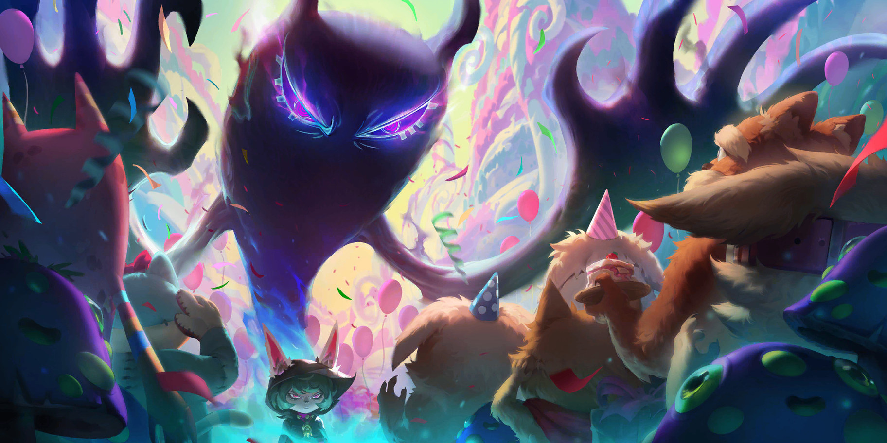
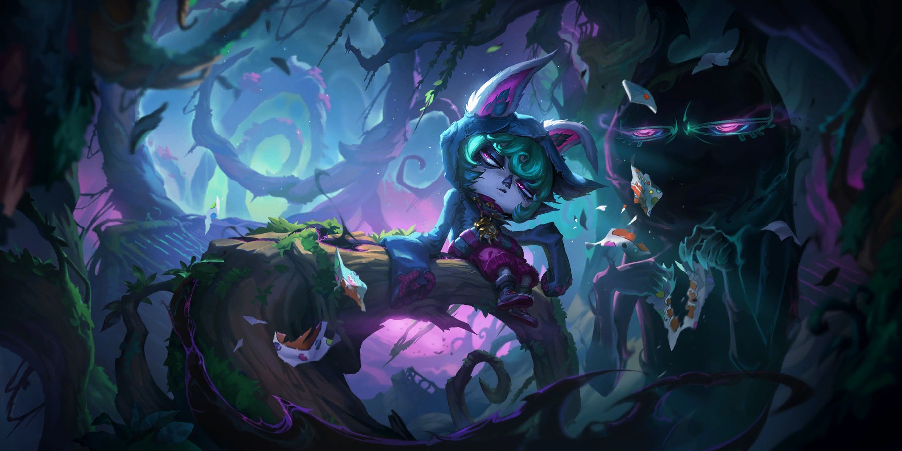
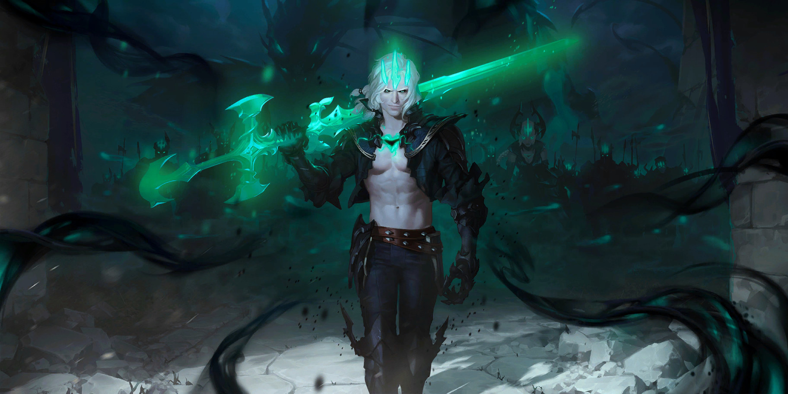
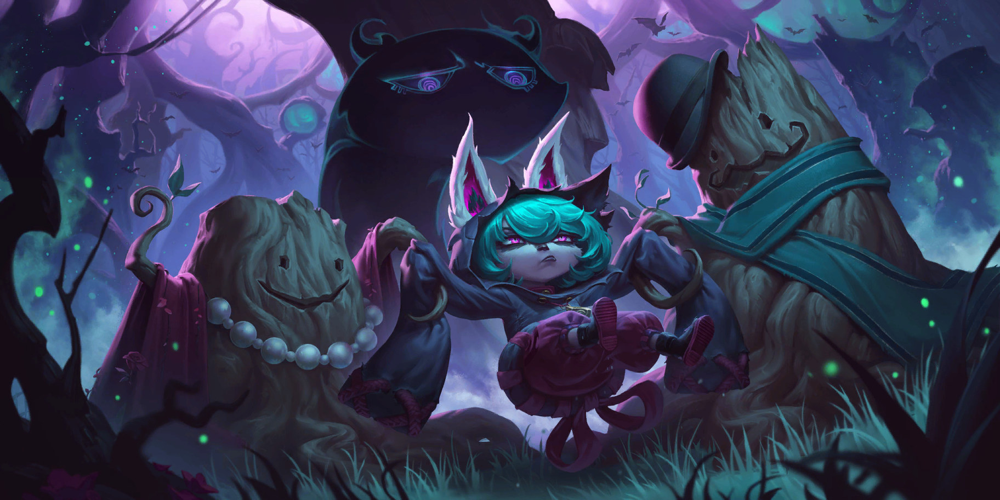
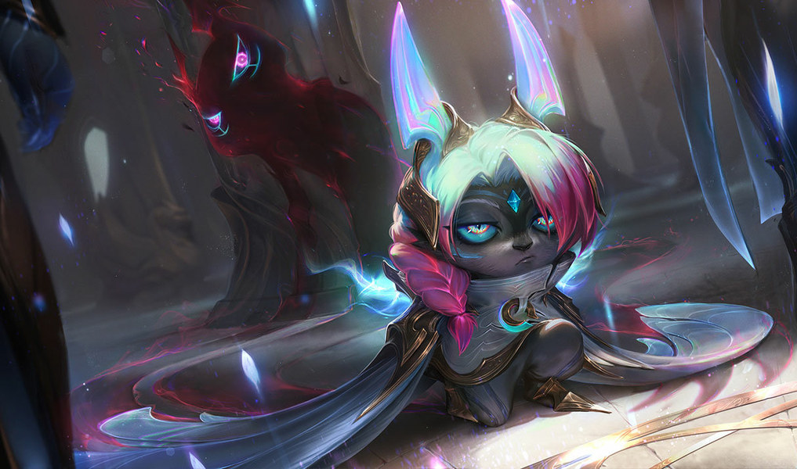
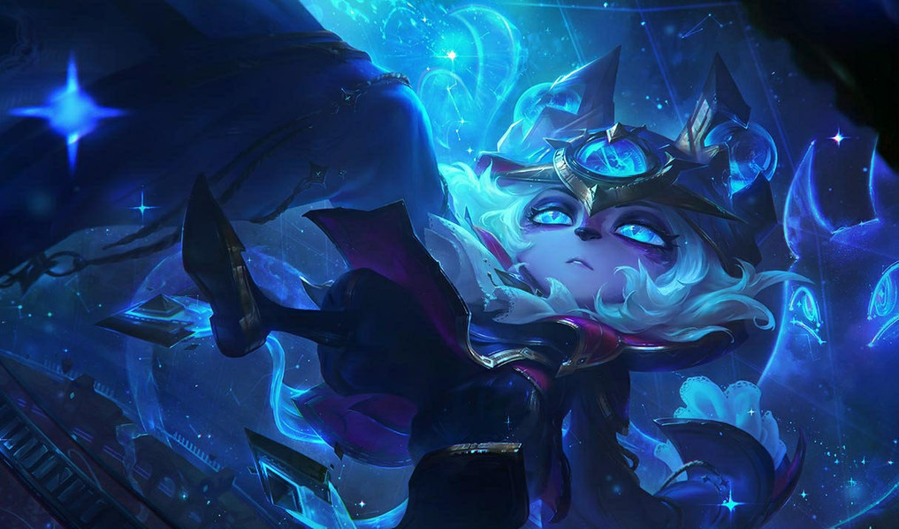
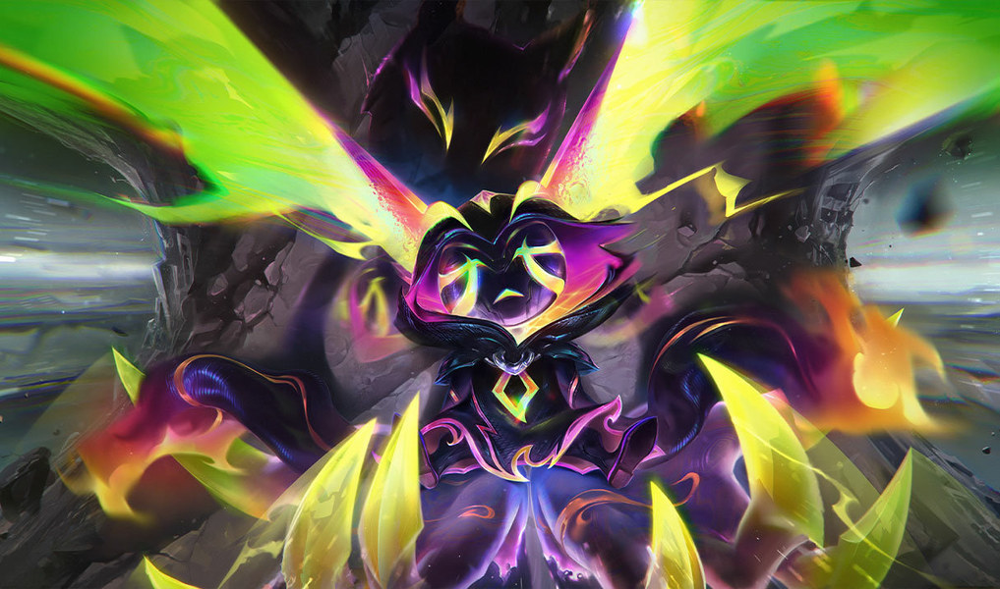
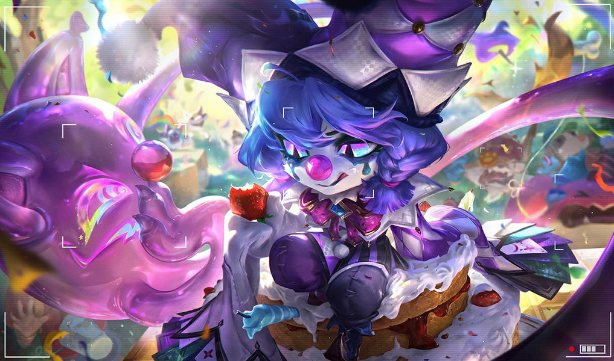

La Tristóloga
Mid · de Ciudad de Bandle a las Islas de la Sombra


Hasta las Islas de la Sombra.
Por fin, un lugar para amargarse tranquila.


Fue a que la rechazaran y la aceptaron




(lo va a odiar)